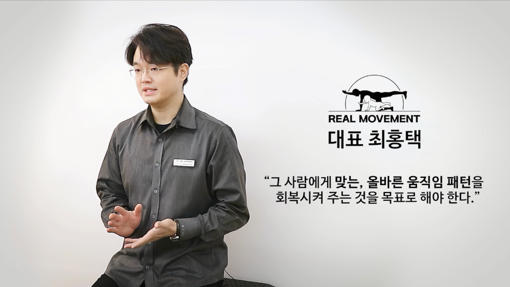
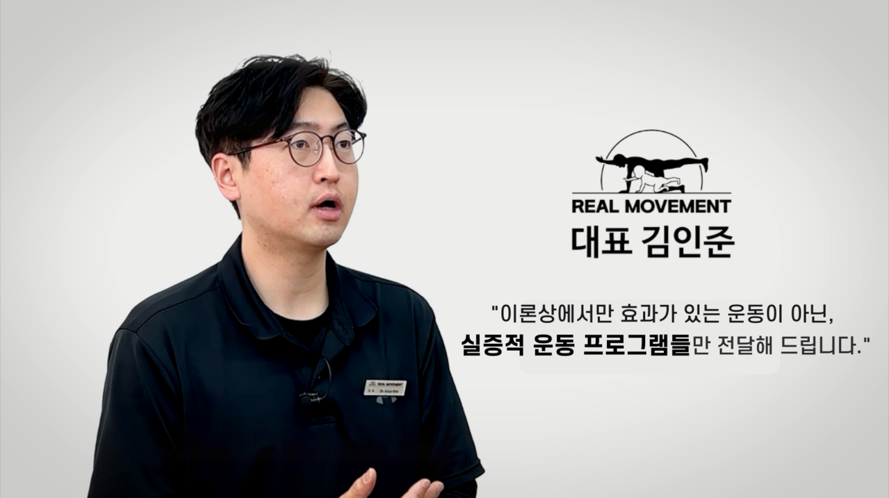

DIRECTORS
대표원장 3인
최홍택 · 김인준 · 박준규. 지점은 달라도, 몸을 읽는 순서는 같습니다.

성수본점 · 역삼한티점
최홍택
움직임 패턴을 회복하는 일을 목표로 둡니다. 한서대학교 겸임교수를 지냈고, 고려대학교 생체역학 및 운동재활 연구에 참여해 왔습니다.
미국 Pennsylvania · Vermont 카이로프랙틱 면허
D.C. / M.S. Chiropractic / M.S. Sport Science
NASM CES · ACSM CPT
STOTT 필라테스 기능해부학
- 前 한서대학교 수안재활복지학과 겸임교수
- 現 고려대학교 생체역학 및 운동재활연구실 선임연구원
- 現 대한트레이너협회 교육이사 · 국제필라테스지도자협회 교육이사
- Schroth, DNS, McGill, FMS/SFMA 등 평가·안정화 과정 수료
성수본점 · 역삼한티점
김인준
싱가포르와 홍콩·광저우에서 임상 현장을 경험한 뒤, 리얼무브먼트 본사를 이끕니다. 이론상 효과만 있는 동작이 아니라 실제로 변하는 프로그램을 고수합니다.
미국 Pennsylvania · Vermont 카이로프랙틱 면허
D.C. / M.S. Chiropractic
한서대 수안재활복지학 석사
- 前 싱가포르 Natural Healing Clinic Associate Doctor
- 前 홍콩/광저우 Bellaire Hospital 재활센터
- 現 리얼무브먼트 대표 · 대한카이로프랙틱협회 이사
- SYM 헬스케어 4DEYE 임상 자문

약수점 · 인천점
박준규
미국 카이로프랙틱과 한국 물리치료사 면허를 함께 가진 근골격·움직임 전문가입니다. 약수와 인천에서 평가와 1:1 프로그램의 기준을 맞춥니다.
미국 New York · California 면허
한국 물리치료사
Doctor of Chiropractic
University of Bridgeport
- 리얼무브먼트 약수점 · 인천점 대표원장
- 보건학 학사 (B.S. in Public Health)
- 현장 평가 후 스트레칭부터 기능운동까지 단계 안내
- 의료 행위가 아닌 운동·웰니스 프로그램으로 운영